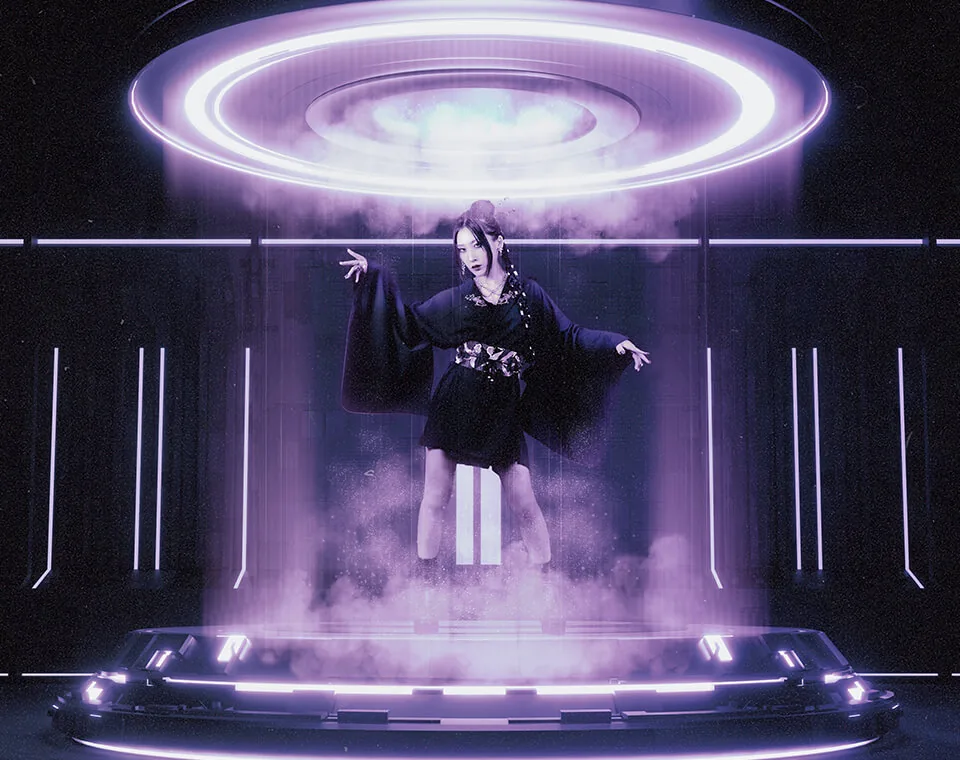
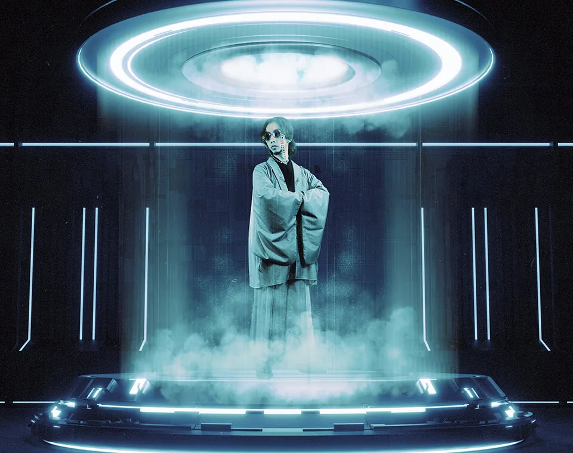

About
Who is PRIDASK?
Formed in 2016 in Sapporo, Hokkaido, Japan,
PRIDASK is a cyber-music duo consisting of Aikapin (Vocal) and Tomoyuki Sakakida (Producer and DJ).
Their group name PRIDASK is a coined term combining the words “PRIDE” and “ASK” reflecting their desire to pause and reexamine their accumulated careers and beliefs.
With heavy, multidimensional beats and futuristic, cyber-inspired electronic sounds as their foundation, the PRIDASK traverses diverse musical genres.
They work across boundaries, contributing music to rhythm games and producing for other artists.
Completely independent and unaffiliated with any specific label or agency, they manage every aspect of their production themselves—from music creation to artwork and music videos.
Their expressive domain continues to expand through 3DCG visuals, virtual live performances, and Fortnite map creation.
From the crossroads of technology and emotion,
they shape loneliness and hope into music—
through innovative sound and visual expression born of a singular vision.


Aikapin (Vocal)
Handles vocals, lyrics, composition, video editing, and artwork.
In 3DCG videos and game production, she focuses on background and character design.
Active as a solo artist—releasing songs, contributing to rhythm games, and performing live.

Tomoyuki Sakakida (Producer / DJ)
Responsible for track-making, audio engineering, and DJ performance.
In 3DCG videos and game production, he handles programming, direction, and cinematography.
Also writes music for other artists and performs worldwide as a DJ.